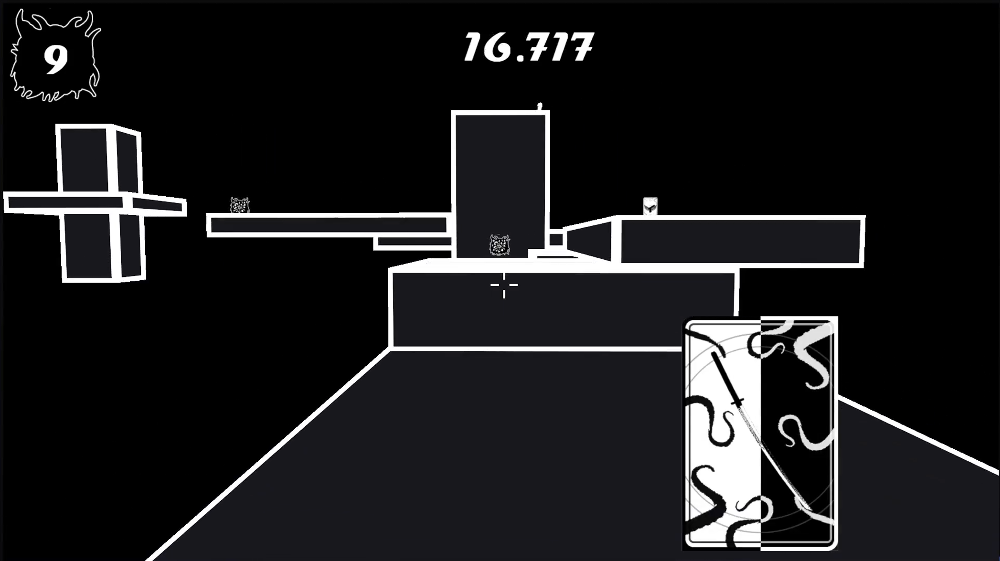
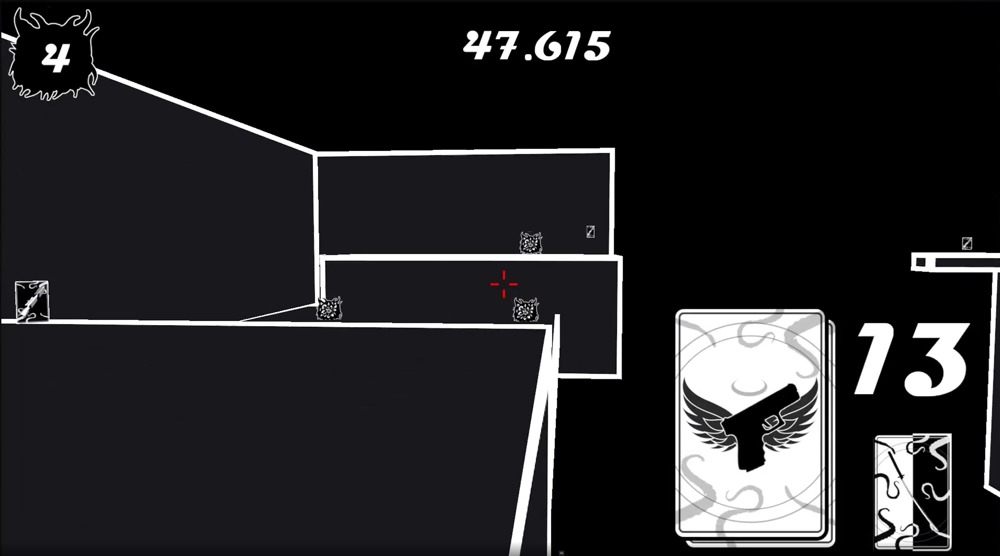
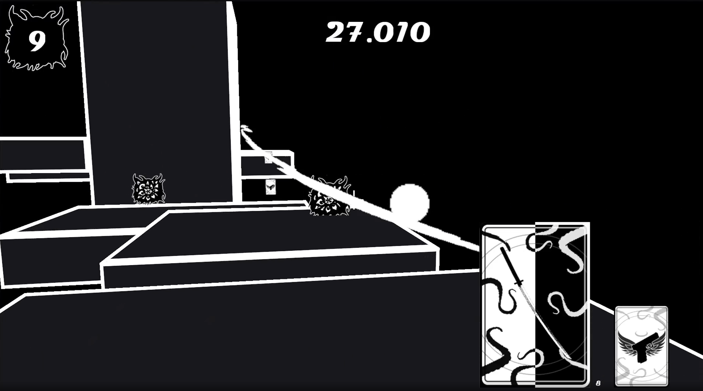
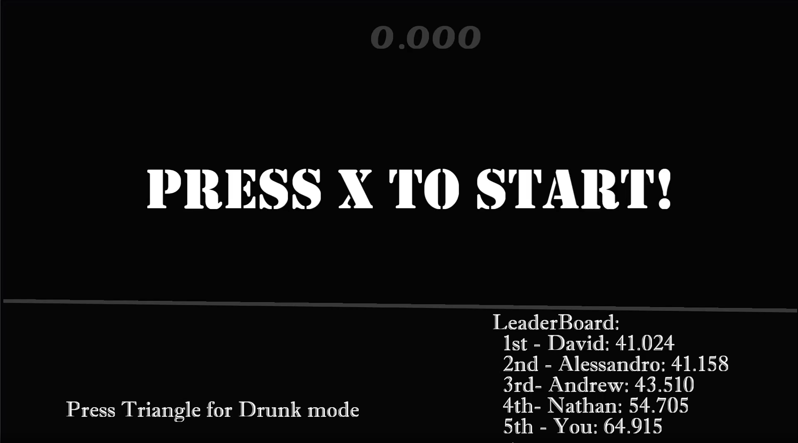
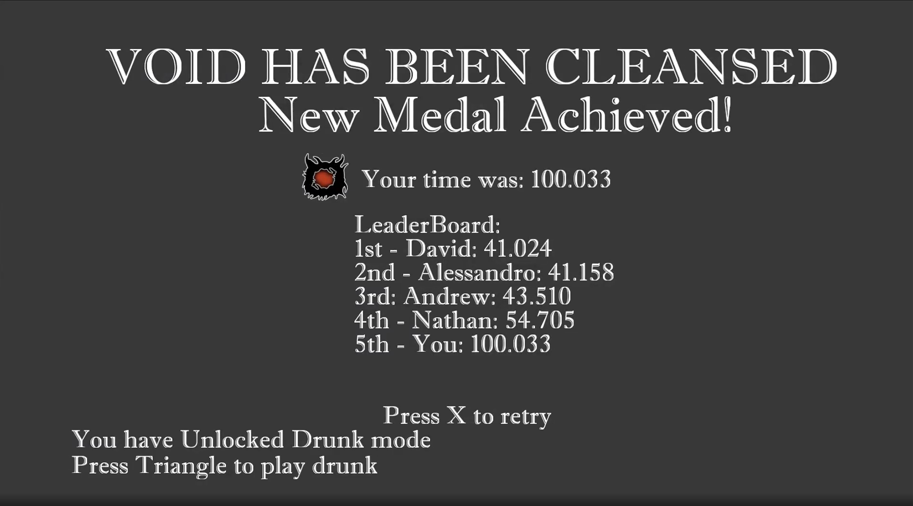
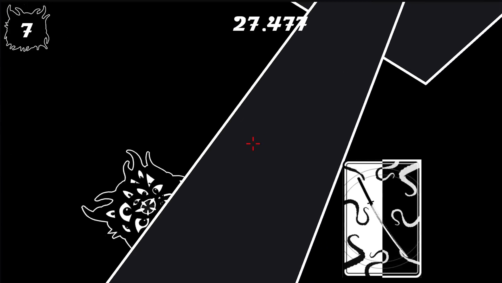

2024 Q2 · Gameplay / UI Programmer
Matte Black
A group project developed on a private engine and developer kit, focused on combat, card powers, UI, and arcade-style game flow.
Project overview
Matte Black was a team project developed by four programmers using a private game engine on non-disclosed hardware. Due to NDA restrictions, the project is not publicly accessible.
Public access is unavailable due to NDA restrictions around the developer kit and target architecture.
My contribution
- Implemented player jumping logic.
- Built card power functionality and card management systems.
- Implemented player death, enemy reset, and restart logic.
- Created leaderboard logic and implementation.
- Added bonus drunk mode.
- Built card UI, enemy health UI, timer UI, start scene, end scene, and sword slash UI.
Gallery





